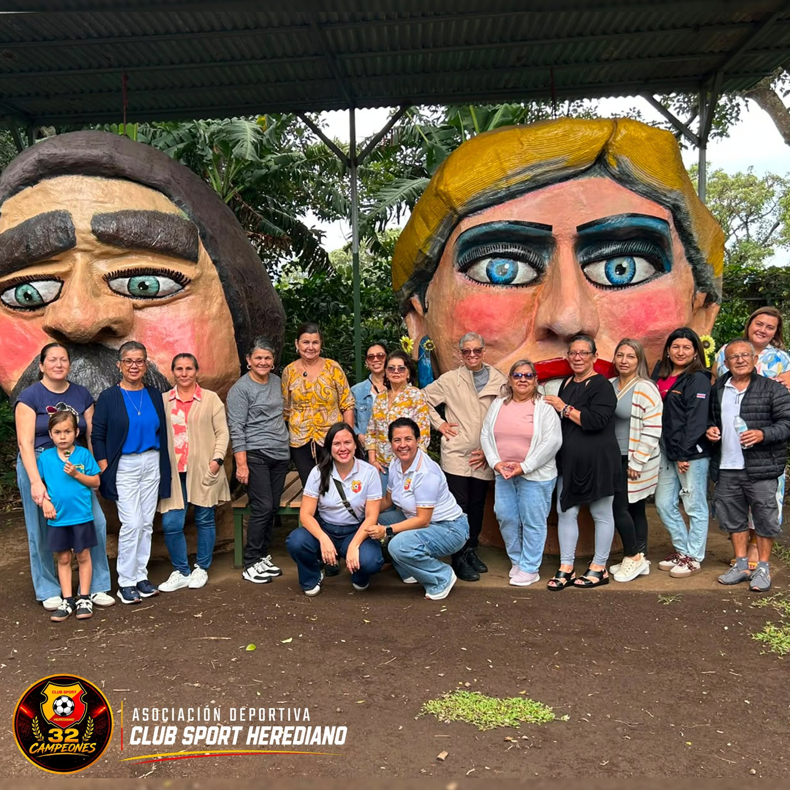
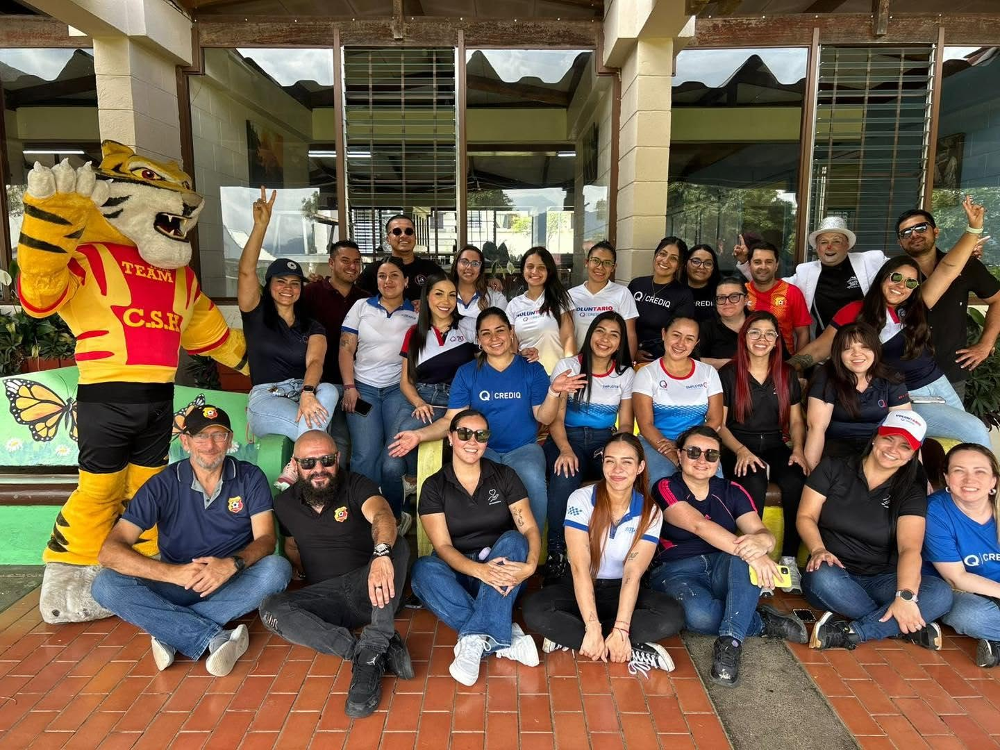
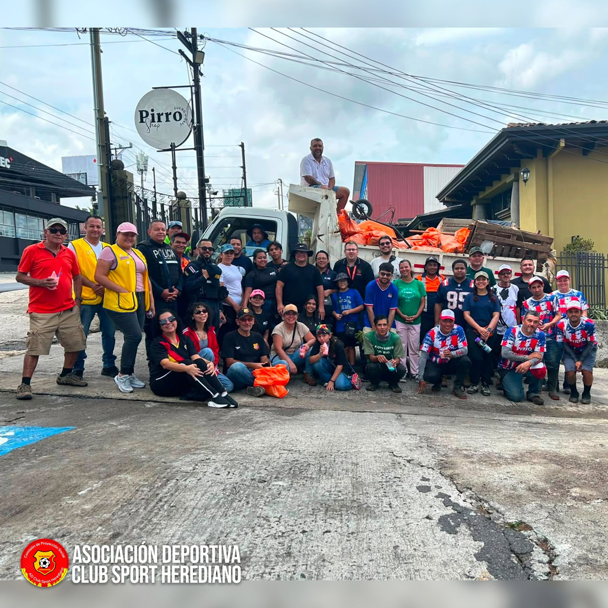
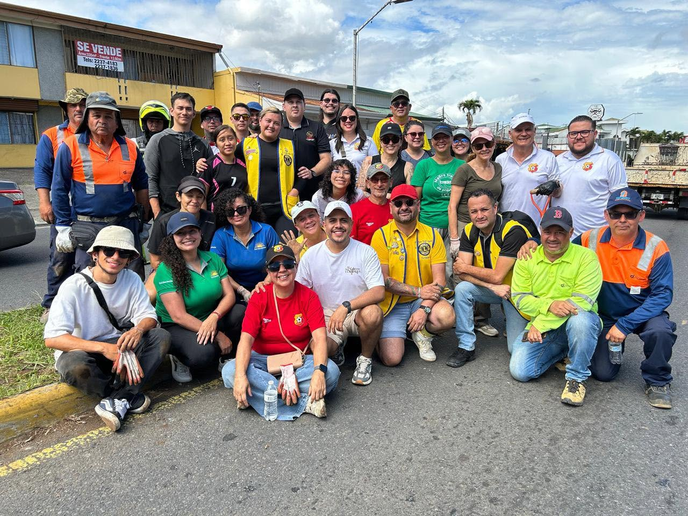
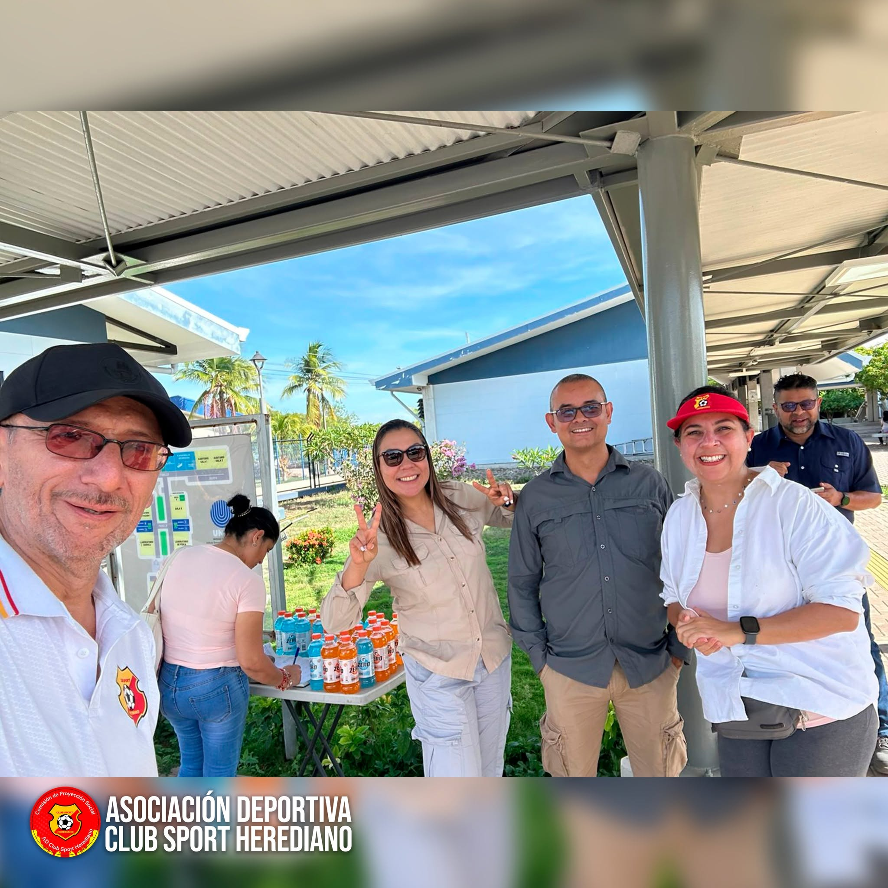
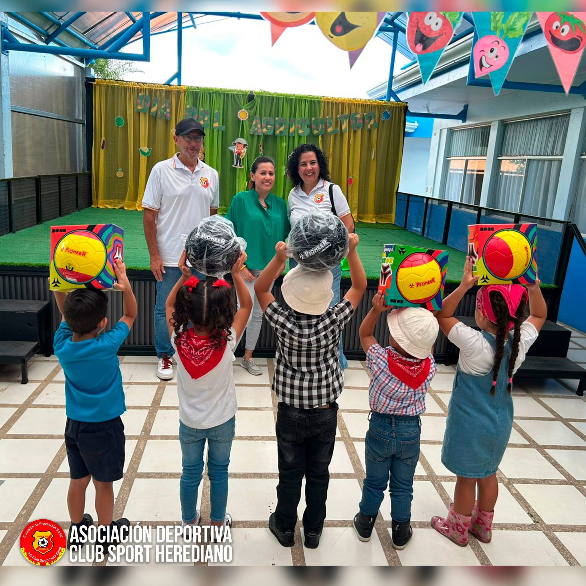
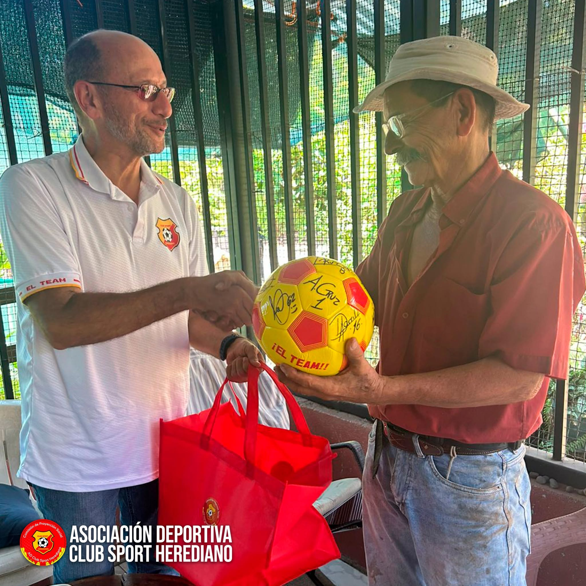

Comisión de Proyección Social
La Comisión de Proyección Social de la Asociación del Club Sport Herediano se encarga de desarrollar e impulsar iniciativas que beneficien a la comunidad, enfocándose en los sectores más vulnerables. Estas acciones reflejan nuestro compromiso con el desarrollo comunitario y la mejora del bienestar, en alineación con los valores de solidaridad y responsabilidad social que caracterizan a nuestra organización.
Miembros de la Comisión
- Alejandro Camacho Hernández
- Magda Alvarado León
- Oscar Arce Rodríguez
- William Montero Castro
- Minor Rodríguez Rojas
- Asesora: Ana Gabriela Fernández Hernández
Dejando una huella positiva en nuestra comunidad
Este sábado, la Comisión de Proyección Social de la Asociación Club Sport Herediano participó en una jornada de voluntariado ambiental en el Parque Natural El Santuario La Fuente, en La Ribera de Belén. Gracias al trabajo conjunto con la Municipalidad de Belén, Credi Q y el MOPT, y al compromiso de 20 voluntarios, logramos: 🌳 Sembrar 90 árboles y plantas. ♻️ Recolectar aproximadamente 100 kilos de residuos. 🤝 Unir esfuerzos en favor del ambiente y la biodiversidad. Cada árbol sembrado y cada residuo retirado representa una pequeña acción que contribuye a construir comunidades más limpias, verdes y sostenibles.

Un día especial para nuestras mamás
La Comisión de Proyección Social de la Asociación Club Sport Herediano, en coordinación con la Unidad Clínica de Mama del Hospital San Vicente de Paúl, celebró el Día de la Madre junto a 15 mamás. En el Museo de Cultura Popular de Barva de Heredia, de la Universidad Nacional, disfrutaron de una visita guiada, juegos, almuerzo, música y, especialmente, de un espacio para compartir y recibir un merecido homenaje. Fue una jornada llena de amor, alegría y solidaridad, dedicada a reconocer la fortaleza y el valor de cada una de ellas. ❤️💛

¡Gracias, Heredia!
La Comisión de Proyección Social de la Asociación Deportiva Club Sport Herediano, en coordinación con la Municipalidad de Heredia, la Cámara de Comercio e Industria de Heredia, diversas instituciones, organizaciones sociales y ciudadanos comprometidos, llevó a cabo con gran éxito la Jornada de Limpieza en Pirro. Gracias al esfuerzo de más de 60 voluntarios, se recolectaron más de 400 kilogramos de residuos, entre plástico, madera, cartón, latas y colillas de cigarrillo. Este logro demuestra que, cuando trabajamos unidos, podemos hacer una gran diferencia por nuestra comunidad y el ambiente.

¡Juntos sembramos futuro para Heredia!
La Comisión de Proyección Social de la Asociación Club Sport Herediano llevó a cabo una exitosa jornada ambiental en el macetero de San Francisco de Heredia, sector de la Bomba El Cristo, donde gracias al esfuerzo conjunto de decenas de voluntarios se logró la siembra de 500 plantas. Esta iniciativa contó con el valioso apoyo de Sol Naciente, la Cámara de Comercio, el Club de Leones de Barva, el Ministerio de Obras Públicas y Transportes (MOPT), La Garra Herediana, aficionados y asociados del Club Sport Herediano, así como el síndico de la comunidad y vecinos que se sumaron de manera voluntaria para contribuir con el embellecimiento y fortalecimiento de las áreas verdes de nuestro cantón. Agradecemos profundamente el compromiso, entusiasmo y espíritu de colaboración de cada persona y organización participante. Actividades como esta demuestran que la unión entre instituciones, empresas, organizaciones y ciudadanía es clave para construir una Heredia más verde, sostenible y solidaria.

Heredianos dentro y fuera de la cancha
La Comisión de Proyección Social de la Asociación del Club Sport Herediano se une este sábado 16 de mayo a la campaña de limpieza de playa organizada junto al Centro de Educación Ambiental y la UNED, en el sector de Playa El Cocal. Desde tempranas horas de la mañana, nuestros voluntarios participarán en una jornada de recolección de residuos a lo largo de aproximadamente 3 kilómetros, reafirmando el compromiso herediano con la protección del ambiente, el trabajo comunitario y la construcción de un mejor país para las futuras generaciones. Agradecemos al Centro de Educación Ambiental, a la UNED y a todas las personas que se suman a esta valiosa iniciativa en favor de nuestras playas y ecosistemas. Nos llena de orgullo colaborar también brindando hidratación y refrigerio a quienes serán parte de esta actividad.

Compromiso con la Comunidad
La Comisión de Proyección Social de la Asociación del Club Sport Herediano realizó la entrega de cinco balones al Kindergarten Juan Mora Fernández, en Santa Bárbara, como parte de nuestro compromiso con las comunidades y el bienestar de la niñez. Con esta donación buscamos apoyar a los niños y niñas del kínder, brindándoles herramientas para el desarrollo de actividades recreativas, deportivas y de aprendizaje en un entorno lleno de diversión, compañerismo y valores. Creemos firmemente que el deporte y la educación son pilares fundamentales para formar mejores ciudadanos y fortalecer nuestras comunidades. Nos llena de orgullo aportar un granito de arena en la formación y felicidad de nuestros pequeños heredianos. ❤️💛⚽

Fiel Herediano
La Comisión de Proyección Social de la Asociación del Club Sport Herediano tuvo el honor de realizar un reconocimiento muy especial a un fiel herediano de corazón: don Luis Fernando Arias Jiménez, vecino de Barrio Sitradique de Parrita. Don Luis representa el amor verdadero por nuestros colores rojo y amarillo. Hace más de 57 años, escuchando los partidos del Team por radio, nació una pasión que hoy sigue más viva que nunca y que ha trascendido generaciones en su familia, integrada por más de 10 fieles aficionados entre hijos, nietos y sobrinos. Con gran emoción, don Luis recuerda a figuras históricas como “Chizo” Salazar, Carlos Camacho y Nilton Nóbrega, jugadores que marcaron la historia de nuestra institución y quedaron grabados en su memoria como parte de tantos momentos inolvidables. Como parte de este reconocimiento, se le hizo entrega de un balón autografiado por jugadores del Club Sport Herediano, como muestra de agradecimiento por tantos años de amor, lealtad y pasión por el Team.

Un momento que nos tocó el corazón
Hoy vivimos una experiencia profundamente emotiva junto a la Comisión de Proyección Social del Club Sport Herediano, Fuerza Herediana y el Departamento de Proyección Social de Canal 7. Tuvimos el honor de acompañar a don Leónidas Solano Acuña, herediano de corazón y pensionado del canal, en una visita muy especial para conocer nuestro nuevo estadio. Más que cemento y graderías, este estadio es historia viva, identidad y el latido de una afición que no se rinde. La emoción de don Leónidas nos recordó que el fútbol trasciende generaciones y que ser herediano se lleva en el alma. El deporte sigue siendo ese puente que nos une, nos inspira y nos impulsa a seguir creciendo, siempre pensando en nuestros socios y aficionados.


Nuestra historia vive en cada paso
Más de 40 exjugadores del Club Sport Herediano visitaron el nuevo estadio en una jornada llena de emoción, recuerdos y orgullo rojiamarillo. Entre anécdotas, abrazos y sonrisas, revivieron momentos que marcaron nuestra historia y fueron testigos de la evolución del club hacia una nueva era. Un encuentro especial junto a la Junta Directiva, la Comisión de Proyección Social y medios de comunicación, que reafirma el vínculo eterno entre nuestro pasado, presente y futuro.
Balones que inspiran sueños en Vara Blanca
Gracias al valioso apoyo de nuestros socios y aficionados, la Comisión de Proyección Social de la Asociación del Club Sport Herediano realizó la entrega de balones de fútbol en la Escuela Julia Fernández Rodríguez, el Liceo Rural y la Asociación de Desarrollo Integral de Vara Blanca. Esta iniciativa busca fomentar la práctica del deporte entre niñas, niños y jóvenes, promoviendo la recreación sana, el trabajo en equipo y estilos de vida saludables. Con acciones como esta, reafirmamos nuestro compromiso con las comunidades y contribuimos al desarrollo integral de la niñez y la juventud.

Hoy vivimos una jornada llena de sonrisas y esperanza
La Comisión de Proyección Social de la Asociación del Club Sport Herediano realizó la entrega de 60 kits escolares a niños y niñas de las escuelas Julia Fernández de Cortés y San Rafael, en el Circuito de Vara Blanca. Gracias al apoyo de nuestra Asociación, socios y aficionados, cada estudiante recibió los útiles necesarios para iniciar el curso lectivo con ilusión y motivación. Cada kit fue preparado cuidadosamente según el grado que cursan, incluyendo maletín, cuadernos, lápices, cartuchera y todos los implementos esenciales para sus estudios. Creemos firmemente que la educación transforma vidas, y nos llena de orgullo poder aportar un granito de arena al futuro de estos niños y niñas.

Alegría y convivencia en el Hogar Alfredo y Delia González Flores
La Comisión de Proyección Social de la Asociación Deportiva Club Sport Herediano vivió una mañana muy especial junto a los residentes del Hogar Alfredo y Delia González Flores. En conjunto con el cantautor Barba, la administración de la institución y el valioso apoyo de voluntarios y colaboradores, se realizó una emotiva actividad llena de música, sonrisas y momentos inolvidables. Nuestra mascota del Team dio una cálida bienvenida, se compartió una reflexión especial y disfrutamos de un espacio de animación que llenó el salón de entusiasmo y participación. Uno de los momentos más significativos fue la celebración de los cumpleaños del mes, además de la entrega de algodón de azúcar que llevó aún más alegría a todos los presentes.

Actividades de Proyección Social 2025:
Ver Informe Completo (PDF)Actividades de Proyección Social 2024:
Ver Informe Completo (PDF)